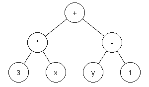
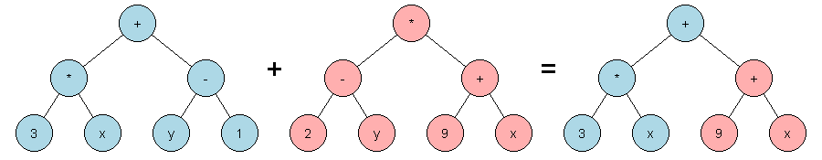

Introduction to Genetic Programming
This page provides a general high-level introduction to genetic programming.
For an introduction on how to specifically use OakGP to perform genetic programming please read the getting started with OakGP guide.
Structure
Representation
Initialisation
Iteration
Genetic Operators
Termination
Example
Aim
Fitness Function
Termination Condition
Primitive Set
Step 1: Create Initial Population
Step 2: Rank Initial Population
Step 3: Evolve New Generation
Step 4: Rank New Generation
Step 5: Terminate
Challenges
Alternative Approaches
Successes
Aim
The aim of genetic programming is to automatically generate computer programs.
Structure
A popular approach to genetic programming is to represent programs using tree structures which are evaluated in a recursive manner. The tree structures consist of:
- Branch nodes. Every branch node is associated with a function and the child nodes represent the arguments to that function. Possible functions include arithmetic operations (e.g. addition) and comparison operations (e.g. equals). The set of functions available to a genetic programming process is called the function set.
- Leaf nodes. Every leaf nodes represents either:
- A constant value. A constant value returns the same value each time is it evaluated.
- A variable. The value returned by a variable will depend on the value assigned to it when evaluated.
The image below contains a tree-structure representing the arithmetic expression: (3 * x) + (y - 1). The structure has seven nodes which consists of three functions (+, * and -), two constants (3 and 1) and two variables (x and y) When x is assigned to 7 and y is assigned to 5 then the result of evaluating this expression will be 25. When x is assigned to 2 and y is assigned to 9 then the result of evaluating this expression will be 14.

Representation
It is common for tree structures to be represented textual using s-expressions and prefix notation. Using this approach a function call is represented as a sequence of space separated elements enclosed in brackets. The first element represents the operator (i.e. function) and the subsequent elements represent the operands (i.e. arguments). For example, the expression: (3 * x) + (y - 1) can be represented as: (+ (* 3 x) (- y - 1)).
The use of s-expressions and prefix notation has the benefits of being:
- Familiar. S-expressions have been popularised by the Lisp programming language.
- Unambiguous. As s-expressions only uses prefix notation it avoids confusion over operator precedence that can occur with infix notation, particularly arithmetic expressions.
- Concise. The exclusive use of prefix notation means that s-expressions have very little syntax - this simplifies the development of parsers to read it.
Initialisation
The genetic programming process starts with an initial population. The initial population is a collection of of programs, with each individual program representing a possible solution to the problem being researched. It is common for the initial population to be generated randomly.
Iteration
Genetic programming uses an iterative process with the input of each iteration being the previous collection of programs (which for the first iteration will be the initial population) and the output of each iteration being a new collection of programs. The collection of programs output for a particular iteration is called a generation. Each iteration uses two components in order to output a new generation:
- Fitness function. A fitness function is an objective function used to indicate how close a program is to solving the problem being researched.
- Genetic operators. Genetic operators generate new programs from existing programs.
The fitness function is used by genetic programming to mimic the evolutionary mechanism of natural selection. The fitness function is applied to each candidate of the existing generation. The better the fitness (i.e. suitability) of a candidate the more likely it is to be selected for use by the genetic operators in order to create the new generation. This means the best candidates of the existing generation have the best chance of contributing to the contents of the new generation.
Genetic Operators
The techniques used to evolve new programs include two main sub-categories:
- Mutation. Mutation alters an existing program to produce a new program. Point mutation is a mutation operator that replaces a randomly selected node in the tree with a new node that has the same arguments as the node it is replacing.
- Crossover. Crossover combines existing programs to produce a new program. Subtree crossover is a crossover operator that replaces a randomly selected node from one tree with a randomly selected subtree of another tree.

Termination
The iterative process of producing new generations continues until a termination condition is met. Possible termination conditions include:
- A program had been found that is considered a suitable solution.
- A set period of time has elapsed.
- A set number of iterations have been processed.
- The process has run for a set number of iterations without any improvement in the quality of programs being generated.
Example
Aim
Below is a table containing mappings from a single input to a single output. The aim of this simple example is to demonstrate how genetic programming can be used to produce an arithmetic function that performs this mapping.
Input Output 10 29 42 125 3 8 Fitness Function
The fitness value for a candidate will be the sum of the differences between the expected outputs (listed in the table above) and the actual outputs when the candidate is evaluated which each of the three input values. The lower the fitness value the better the candidate.
Termination Condition
The process will continue until a candidate is found that has a fitness value of zero.
Primitive Set
The primitive set used by our example genetic programming process will consist of:
- A function set containing the addition (
+), subtraction (-) and multiplication (*) arithmetic operators.- A variable set containing a single variable named
x.- A constant set containing the integer values
0,1,2,3,4and5.Step 1: Create Initial Population
The initial population consists of the following 2 candidates that were randomly generated:
(+ (+ 3 2) (* 1 1))(+ (- x x) (+ x x))Step 2: Rank Initial Population
Candidate 1:(+ (+ 3 2) (* 1 1))Fitness = 23 + 119 + 2 = 144
Input Expected Actual Difference 10 29 6 23 42 125 6 119 3 8 6 2
Candidate 2:(+ (- x x) (+ x x))Fitness = 9 + 41 + 2 = 52
Input Expected Actual Difference 10 29 20 9 42 125 84 41 3 8 6 2
Rank Candidate Fitness 1st (+ (- x x) (+ x x))52 2nd (+ (+ 3 2) (* 1 1))144 Step 3: Evolve New Generation
We can now apply genetic operators to candidates from the initial generation in order to generate a new generation:
(+ (- x x) (+ x x))mutates to(+ (* x x) (+ x x))(+ (- x x) (+ x x))and(+ (+ 3 2) (* 1 1))crossover to(+ (- x (* 1 1)) (+ x x))Step 4: Rank New Generation
Candidate 1:(+ (* x x) (+ x x))Fitness = 91 + 1723 + 7 = 1821
Input Expected Actual Difference 10 29 120 91 42 125 1848 1723 3 8 15 7
Candidate 2:(+ (- x (* 1 1)) (+ x x))Fitness = 0 + 0 + 0 = 0
Input Expected Actual Difference 10 29 29 0 42 125 125 0 3 8 8 0
Rank Candidate Fitness 1st (+ (- x (* 1 1)) (+ x x))0 2nd (+ (* x x) (+ x x))1821 Step 5: Terminate
A candidate with a fitness value of zero has now been found. This means that the process had come to a successful conclusion. If a candidate had not yet been found that satisfied the termination condition then steps 3 and 4 would of been repeated.
Challenges
- Bloat. After multiple generations the size (i.e. number of nodes) of possible solutions can increase without a corresponding improvement in fitness. Disadvantages of bloat include overly complex solutions and the possibility of overfitting - where solutions evolve that fit the very specific details of the training data at the expense of being able to generalise. Approaches to limiting bloat include:
- Enforcing maximum limits on the size of trees.
- Simplifying expressions. Some expressions can be simplified to perform the same operation with fewer nodes - e.g. the expression
(+ (- v0 v0) v1)can be simplified to the expression(+ 0 v1)(as anything minus itself is zero) which in turn can be simplified tov1(as anything plus zero is itself). - Using genetic operators that produce offspring that are smaller in size than their parents - e.g. shrink mutation (where a function node is replaced with a terminal node) or hoist mutation (where a subtree of a parent is selected as a new offspring).
- Local optima. Generations may converge towards a solution that, while better than its closest alternatives, is not the best possible solution (i.e. global optima). Including some new randomly generated solutions in each generation can assist in keeping generations diverse.
- Lack of expressiveness. The primitive set may not contain the appropriate functions, constants or variables to be able to construct a suitable solution for the problem being investigated.
- Resource constraints. To solve some problems it may be necessary to have large population sizes or numbers of generations that require a large amount of memory or processing power to complete. Caching can be used to avoid the need to re-evaluate the fitness of the same candidate for multiple generations. Taking advantage of a machine's multiple processors, or distributing tasks amongst multiple machines, can reduce the time it takes for generations to be processed.
Alternative Approaches
Alternatives to a tree-based approach to genetic programming include:
- Linear Genetic Programming - where programs are represented as a sequence of instructions.
- Cartesian Genetic Programming - where programs are represented in the form of directed acyclic graphs.
Successes
Genetic programming has been applied to a wide range of problem domains including financial trading, industrial process control and biomedical data mining. See The Genetic Programming Bibliography for a bibliography of papers published on Genetic Programming.